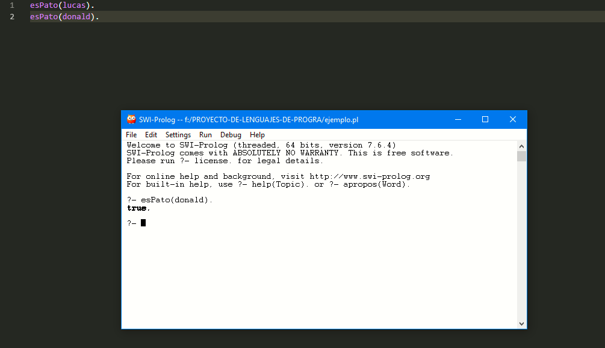
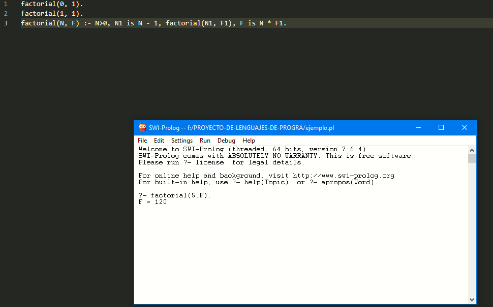

Lenguaje Prolog

Prolog es un lenguaje de programación lógica cuya primera versión fue desarrollada a principios de la década de 1970 por Colmerauer en la universidad de Marsella. Contrariamente a otros lenguajes de programación basados es estructuras de control y definición de funciones para calcular resultados, Prolog está orientado a la especificación de relaciones para responder consultas. En ese sentido Prolog es similar a un sistema de base de datos, aunque en el contexto de la inteligencia artificial se prefiere hablar de bases de conocimiento, enfatizando la complejidad estructural de los datos y de las deducciones que se pueden obtener de ellos.
Símbolos, sintaxis, esqueleto de lo programas
Al contrario que la mayoría de los lenguajes de programación, Prolog es un lenguaje conversacional; es decir, el sistema Prolog mantiene un diálogo continuo con el programador desde el inicio de la sesión hasta el final de la misma. Este diálogo toma generalmente la forma de un interrogatorio, a lo largo del cual el programador planteará preguntas al sistema Prolog. Por su parte, el sistema Prolog responderá cada una de las preguntas formuladas por el programador en la medida en que esto sea posible.
Preguntas
Si se quiere preguntar a Prolog si 5 es igual a 2 + 3
?- 5 is 2+3.
Yes
También, puede responder de manera negativa en ese caso. Ejemplo:
?- 1 is 1+1.
No
Para responder a tales preguntas, Prolog consulta una base de conocimiento. Inicialmente, Prolog cuenta con una base incial de conocimiento que consiste entre otras cosas definiciones de aritmética de numeros naturales.
Se puede ampliar la base de conocimientos.
esPato(lucas).
esPato(donald).
esPato(gilito).
Con los predicados anteriores se le ha dicho a Prolog que lucas, donald y gilito "son patos". Con esto, cuando se le pregunte a Prolog:
?- esPato(lucas).
Yes
Responderá afirmativamente. En cambio, si se pregunta:
?- esPato(jorgito).
No
Responderá negativamente, debido a que no se escibió un predicado que afirme que "jorgito es pato"
Se puede preguntar a Prolog todas las posibles respuestas aPato. Se utiliza:
?- esPato(X).
Y regresará:
X = lucas
Pudiendo obtener todas las respuestas con un ";"
?- esPato(X).
X = lucas;
X = donald;
X = gilito;
No
Para más información: http://www.lcc.uma.es/~pacog/apuntes/pd/guia.pdf
¿Qué es necesario instalar para utilizar el sistema Prolog?
Se puede utilizar SWI-Prolog
Se puede descargar aquí
Se puede observar en la imagen abajo, dos sencillas declaraciones de verdades absolutas y una consulta.
En cuanto al editor de texto, puede usarse cualquier editor de texto (VS Code, Sublime Text, etc) o el editor integrado en SWI-Prolog. Los archivos de codigo se deben guardar con la extensión .pl, igual que con los archivos del lenguaje Perl, por lo que hay que tenerlo en cuenta.
Un ejemplo
factorial(0, 1).
factorial(1, 1).
factorial(N, F) :- N>0, N1 is N - 1, factorial(N1, F1), F is N * F1.
Al preguntarle a Prolog
?- factorial(5,F).
F = 120

Como se puede observar, el factorial se calcula de manera recursiva. La sintaxis es:
factorial(N, F)